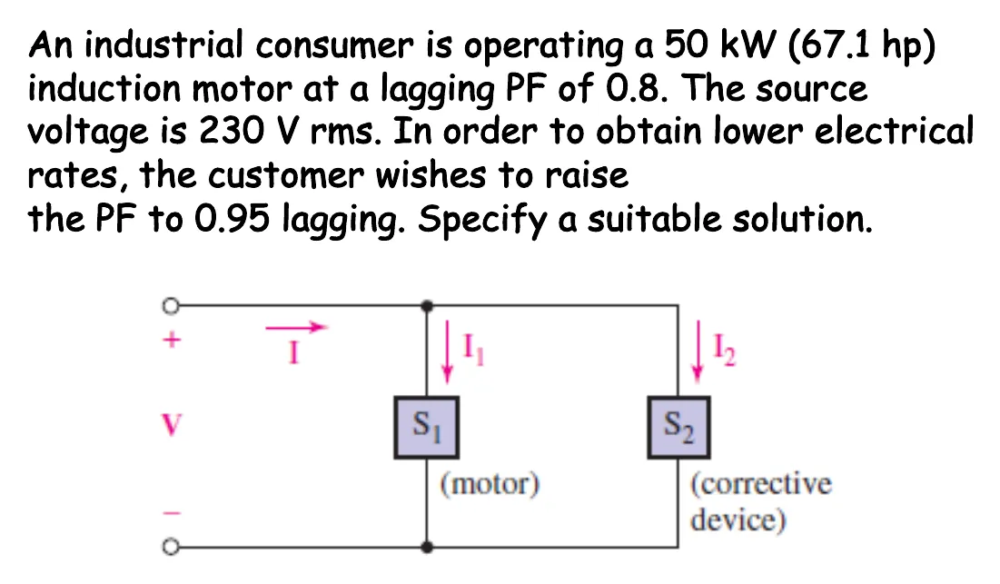

การปรับปรุงตัวประกอบกำลัง Power factor correction — a capacitor in parallel with the load
Power factor correction A capacitor in parallel with the load
สไลด์ปี 2561 หน้า 17 อธิบายว่า อุปกรณ์ใช้แค่กำลังเฉลี่ย \(P\) แต่การไฟฟ้าต้องส่งกำลังปรากฏ \(|\mathbf{S}|\) ผ่านสายส่ง หม้อแปลง และเครื่องกำเนิดไฟฟ้า ที่แรงดันคงที่ \(|\mathbf{S}| = V_{\text{rms}}I_{\text{rms}}\) กระแสในสายจึงเท่ากับ \(I = P/(V\cdot\text{PF})\): ตัวประกอบกำลังต่ำ กระแสสูง สายร้อน และสูญเสียมาก การไฟฟ้าจึงเก็บค่าปรับจากผู้ใช้รายใหญ่ที่มีตัวประกอบกำลังต่ำกว่าประมาณ 0.85 ตามหลัง (Hayt §11.5) โหลดส่วนใหญ่ เช่น มอเตอร์ เป็นโหลดเหนี่ยวนำ วิธีแก้คือต่อตัวเก็บประจุขนานกับโหลด ให้ตัวเก็บประจุจ่ายกำลังรีแอกทีฟให้มอเตอร์ในพื้นที่ แทนที่จะดึงมาจากการไฟฟ้า ฉบับแจก 2565 ไม่มีสองหน้านี้และไม่มีโจทย์บ้าน (มีเฉพาะในสไลด์ปี 2561) หน้านี้จึงนำมาใช้ทั้งหมด
The 2018 slides, p. 17, explain that a device uses only the average power \(P\), but the utility must deliver the apparent power \(|\mathbf{S}|\) through its lines, transformers and generators. At a fixed voltage \(|\mathbf{S}| = V_{\text{rms}}I_{\text{rms}}\), so the line current is \(I = P/(V\cdot\text{PF})\): a low power factor means a large current, hot wires and large losses. Utilities therefore charge large customers whose power factor falls below about 0.85 lagging (Hayt §11.5). Most loads, motors for example, are inductive. The cure is a capacitor in parallel with the load: it supplies the motor's reactive power locally instead of drawing it from the utility. The 2022 handout lacks these two slides and the house problem (they exist only in the 2018 slides), so this page uses them all.
ประเด็นสำคัญของหน้านี้
- โหลดใช้ \(P\) แต่สายต้องส่ง \(|\mathbf{S}| = P/\text{PF}\): ตัวประกอบกำลังต่ำ = กระแสในสายสูง (\(I = P/(V\cdot\text{PF})\)) และการสูญเสีย \(I^2R\) ในสายสูงตาม
- ต่อตัวเก็บประจุขนานกับโหลด (ไม่ใช่อนุกรม) แรงดันที่โหลดจึงไม่เปลี่ยน \(P\) และกระแสของโหลดเท่าเดิม แต่ \(Q\), \(|\mathbf{S}|\) และกระแสในสายลดลง
- \(Q_C = P[\tan(\theta-\phi)_{\text{new}} - \tan(\theta-\phi)_{\text{old}}]\) ได้ค่าลบ แปลว่าต้องใช้ตัวเก็บประจุ (สไลด์ปี 2561 หน้า 18)
- ตัวเก็บประจุรับ \(Q_C = -V_{\text{rms}}^2/X_C = -2\pi f C\,V_{\text{rms}}^2\) จึงได้ \(C = |Q_C|/(2\pi f V_{\text{rms}}^2)\) ค่า \(C\) ขึ้นกับความถี่: ไทยใช้ 50 Hz ส่วนเฉลยของ Hayt ใช้ 60 Hz
- แก้ให้ได้ 1 พอดีต้องใช้ตัวเก็บประจุใหญ่มากแต่กระแสลดลงเพิ่มอีกนิดเดียว และถ้าใส่มากเกินไปจะกลายเป็นนำหน้า จึงนิยมแก้ถึงประมาณ 0.9–0.95 ตามหลัง
Key points of this page
- A load uses \(P\), but the line must carry \(|\mathbf{S}| = P/\text{PF}\): a low power factor means a large line current (\(I = P/(V\cdot\text{PF})\)) and large \(I^2R\) losses in the line.
- Put the capacitor in parallel with the load (not in series), so the load voltage does not change: \(P\) and the load current stay the same, while \(Q\), \(|\mathbf{S}|\) and the line current drop.
- \(Q_C = P[\tan(\theta-\phi)_{\text{new}} - \tan(\theta-\phi)_{\text{old}}]\) comes out negative, meaning a capacitor is needed (2018 slides, p. 18).
- A capacitor takes \(Q_C = -V_{\text{rms}}^2/X_C = -2\pi f C\,V_{\text{rms}}^2\), so \(C = |Q_C|/(2\pi f V_{\text{rms}}^2)\). \(C\) depends on the frequency: Thailand uses 50 Hz, Hayt's solution 60 Hz.
- Correcting all the way to 1 needs a much larger capacitor for little extra drop in current, and too much makes it leading, so about 0.9–0.95 lagging is the usual target.
มอเตอร์เหนี่ยวนำ 50 kW ที่ PF 0.8 ตามหลัง แรงดัน 230 V (ค่ายังผล): ปรับ PF เป็น 0.95 ตามหลัง
A 50 kW induction motor at a lagging PF of 0.8 on 230 V rms: raise the PF to 0.95 lagging

มอเตอร์ถูกแทนด้วยอิมพีแดนซ์ \(Z_m = |\mathbf{V}|^2/\mathbf{S}_1^* = 0.677 + j0.508\ \Omega\) ที่รับ \(\mathbf{S}_1 = 50 + j37.5\) kVA พอดี ภาพจำลองเปลี่ยนตามขั้น: สามเหลี่ยมของมอเตอร์ เป้าหมาย 18.19° และลูกศร \(Q_C\) ที่ชี้ลง ในขั้นที่ 4 สวิตช์ปิด ตัวเก็บประจุต่อเข้าวงจร แล้วจุดในสายจากแหล่งจ่ายวิ่งช้าลง ทั้งที่จุดในมอเตอร์วิ่งเท่าเดิม กราฟใช้สเกลคงที่จึงเห็นกระแสในสายเล็กลง
The motor is modelled by the impedance \(Z_m = |\mathbf{V}|^2/\mathbf{S}_1^* = 0.677 + j0.508\ \Omega\), which takes exactly \(\mathbf{S}_1 = 50 + j37.5\) kVA. The simulation follows the steps: the motor's triangle, the 18.19° target and the downward \(Q_C\) arrow. At step 4 the switch closes and the capacitor joins the circuit; the dots in the line from the source slow down while the dots in the motor keep their speed. The graph keeps one scale, so the line current visibly shrinks.
ดูสไลด์หน้า 15 และวิธีทำที่ผู้สอนเขียนในห้อง (ปี 2561)See slide p. 15 and the solution written in class (2018)
ลองเลือกตัวเก็บประจุเอง: 0.95, 1 หรือมากเกินไป
Choose the capacitor yourself: 0.95, 1, or too much
เลื่อน \(C\) หรือกดปุ่ม แล้วดูสามเหลี่ยมกำลัง (\(Q_C\) ชี้ลง ดึง \(\mathbf{S}\) ให้เตี้ยลงโดย \(P\) เท่าเดิม) และกระแสในสาย กด "PF = 1": ต้องใช้ตัวเก็บประจุใหญ่ขึ้นมาก แต่กระแสลดลงอีกไม่มาก กด "มากเกินไป": สามเหลี่ยมพลิกลงล่าง PF กลายเป็นนำหน้า และกระแสในสายกลับเพิ่มขึ้น
Slide \(C\) or press a button, and watch the power triangle (\(Q_C\) points down and pulls \(\mathbf{S}\) lower while \(P\) stays) and the line current. Press "PF = 1": it needs a much larger capacitor, yet the current drops only a little more. Press "too much": the triangle flips down, the PF becomes leading, and the line current grows again.
บ้านหนึ่งหลังใช้แรงดัน 220 V (ค่ายังผล) 50 Hz: หาค่ารวม แก้ PF เป็น 0.95 ตามหลัง และค่าไฟฟ้า
A house on 220 V rms, 50 Hz: the totals, the correction to PF 0.95 lagging, and the electricity bill

อุปกรณ์ทุกตัวต่อขนานกับแหล่งจ่าย กำลังเชิงซ้อนของมันจึงบวกกันได้ ขั้นที่ 1–4 ต่ออุปกรณ์เข้าวงจรทีละตัวและต่อสามเหลี่ยมของมันหัวต่อหาง ขั้นที่ 6 ต่อตัวเก็บประจุ (กราฟ: เส้นประคือกระแสก่อนต่อ) ปุ่มใต้ภาพหรือสวิตช์ในวงจรใช้ทดลองเปิดปิดอุปกรณ์ได้ เฉลยทีละขั้นคิดตอนเปิดครบทุกตัวตามโจทย์ ตัวเก็บประจุมีค่าคงที่ตามที่คำนวณสำหรับกรณีนั้น ลองปิดแอร์ดูว่า PF เป็นอย่างไร
All the appliances are in parallel with the source, so their complex powers add. Steps 1–4 connect the appliances one at a time and join their triangles head to tail; step 6 connects the capacitor (graph: the dashed line is the current before). The buttons under the picture, or the switches in the circuit, let you turn appliances on and off; the step-by-step solution assumes everything is on, as the problem says. The capacitor is fixed at the value sized for that case; turn the air conditioner off and see what happens to the PF.
ดูเฉลยที่พิมพ์ไว้ (ปี 2561)See the typed solution (2018)
![Typed solution of the house problem, in Thai: a sketch of 220 Vrms 50 Hz with the fridge, stove, lamps and air conditioner in parallel; fridge S1 = 220×5 = 1100 VA, angle 36.87°, P1 = 880 W, Q1 = 660 VAR; stove P2 = 1000 W, Q2 = 0; lamps P3 = 40×10 = 400 W, angle 53.13°, Q3 = 400 tan(53.13) = 533.33 VA; air conditioner P4 = 3500 W, Q4 = 3570.71 VAR; (a) P = 5780 W, Q = 4764.04 VAR, S = 7490.29 VA, p.f. = 0.7717 lagging, I = 34.047 A; (b) old angle 39.493°, new angle 18.195°, QC = −2863.67 VAR, C = 188.33 µF, S new = 6084.21 VA, I new = 27.656 A, the current drops by 6.391 A, 18.77 %; (c) 5780×10×30 = 1734 kWh, 1734×2.5 = 4335 baht](slides/ch8/L14.webp)
ฝึกเพิ่ม
More practice
ลองทำดู 1 — ทำไมต้องต่อขนาน
- ข้อ 1: ต่อตัวเก็บประจุแล้ว กระแสมอเตอร์ \(I_1\) เท่าเดิม 271.7 A เพราะแรงดันคร่อมมอเตอร์ยังเป็น 230 V
- ถ้าต่ออนุกรม แรงดันที่มอเตอร์จะเปลี่ยน มอเตอร์ไม่ได้ทำงานที่พิกัดอีกต่อไป (Hayt: "it must be added in parallel")
- กระแสในสายลดจาก 271.7 A เหลือ 228.8 A (ลดลง 15.8 %) โดยมอเตอร์ได้กำลังเท่าเดิม
ลองทำดู 2 — แก้ถึง 1 คุ้มไหม
- ส่วน A กด "PF = 1": ต้องใช้ \(C = 2.257\) mF มากกว่ากรณี 0.95 ถึง 78 %
- แต่กระแสในสายลดจาก 228.8 A เหลือ 217.4 A อีกเพียง 5 %
- กด "มากเกินไป": PF กลายเป็นนำหน้า และกระแสในสายกลับเพิ่มขึ้น
ลองทำดู 3 — ค่าไฟฟ้าของบ้านลดไหม
- ข้อ 2: ต่อตัวเก็บประจุแล้ว \(P\) ยังเป็น 5780 W ค่าไฟฟ้า 4335 บาทเท่าเดิม เพราะมิเตอร์บ้านคิดพลังงาน (kWh) ซึ่งมาจาก \(P\)
- สิ่งที่ลดลงคือกระแสในสายไฟของบ้าน (34.05 → 27.66 A) จึงร้อนน้อยลงและสูญเสียน้อยลง
- ปิดแอร์ทั้งที่ตัวเก็บประจุยังต่ออยู่: PF กลายเป็นนำหน้า ตัวเก็บประจุค่าคงที่จึงเหมาะกับโหลดที่ไม่ค่อยเปลี่ยน
Try this 1 — why in parallel
- Problem 1: with the capacitor connected the motor current \(I_1\) stays at 271.7 A, because the motor still sees 230 V.
- In series, the motor voltage would change and the motor would no longer run at its rating (Hayt: "it must be added in parallel").
- The line current drops from 271.7 A to 228.8 A (15.8 % less) while the motor gets the same power.
Try this 2 — is correcting to 1 worth it?
- In section A press "PF = 1": it needs \(C = 2.257\) mF, 78 % more than for 0.95.
- Yet the line current only drops from 228.8 A to 217.4 A, another 5 %.
- Press "too much": the PF becomes leading and the line current grows again.
Try this 3 — does the house bill drop?
- Problem 2: with the capacitor connected \(P\) is still 5780 W and the bill stays 4335 baht, because a house meter counts energy (kWh), which comes from \(P\).
- What drops is the current in the house wiring (34.05 → 27.66 A), so it runs cooler with smaller losses.
- Turn the air conditioner off with the capacitor still in: the PF becomes leading, so a fixed capacitor suits loads that change little.